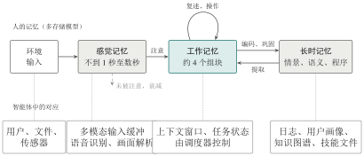

8.3 基于认知学的记忆
前两节从工程角度讨论记忆。换一个参照系：人是怎样接收、保持和想起信息的？认知心理学的记忆模型并不要求智能体复制大脑，但它提供了几条有用的约束：输入为什么会很快消失，当前任务为什么只能同时处理少量内容，长期知识为什么要分类型，回忆为什么会出错。本节先介绍感觉记忆、工作记忆、长时记忆三个存储，再讲信息在其间流动的编码、巩固与提取，最后把它们对应到智能体的组件上，并指出哪些地方不能照搬。结论是：认知模型最大的用处，是把“智能体记不住”拆成可以逐个诊断的环节。
8.3.1 认知学记忆模型
认知学记忆模型描述信息从进入感官到形成长期经验的过程。Atkinson 与 Shiffrin 在 1968 年提出的多存储模型把记忆分为三个存储：感觉记忆、短时记忆和长时记忆，并强调注意、复述和编码策略等控制过程决定信息能否从一个存储进入下一个[20]。后来的研究修正了这种线性看法：短时系统不只是被动暂存，人在理解、推理和决策时还要主动操作信息，“工作记忆”的概念因此取代了“短时记忆”[23],[25]；长时记忆也不是一个大仓库，而是由多个系统组成[5]。图 8-9 给出了本节使用的框架，下排是每个存储在智能体中的大致对应。

图 8-9 认知学的多存储模型（上）及其在智能体中的大致对应（下）。实线箭头表示信息在存储之间的流动；点线表示功能上的对应，并不意味着机制相同
这个框架对工程有三点用处。第一，定位瓶颈：问题发生在输入筛选、当前操作、长期保存还是提取？第二，选择机制：某类信息需要短暂缓冲、主动工作区还是持久存储？第三，解释失败：是根本没编码，编码后没巩固，还是存过但线索找不回来？这三种失败需要完全不同的修复办法。
8.3.2 感觉记忆：让连续的世界先进入系统
感觉记忆是刺激刚出现时留下的极短暂表征。Sperling 在 1960 年的实验中让被试短暂看一组字母，发现如果事后用声音提示“报告第几行”，被试几乎能报出任意一行，说明短暂的视觉图像里保存的信息比他们能完整说出的多得多；但这个图像在不到一秒内就会消退[21]。听觉也有类似的短暂存储，保留时间可达数秒[22]。前者常称图像记忆，后者称回声记忆。
感觉记忆的功能不是永久保存输入，而是为注意的选择提供一小段缓冲：显著的变化、与当前目标相关的内容被选进下一级，其余很快退场。对智能体来说，它对应多模态输入缓冲：音频分片、视频帧、屏幕截图、传感器读数先进入短期队列，再由语音识别、图像描述、屏幕解析等环节提取出可处理的信息。把整场会议的原始音视频都塞进模型上下文代价太高，更合理的做法是短暂保留原始证据，同时把被关注的内容转成下一层可用的表征。
8.3.3 工作记忆：容量有限的操作台
工作记忆负责在执行复杂任务时临时保持并操作信息。它和早期“短时记忆”的区别在于：它不仅记住刚出现的电话号码，还要在脑中比较、排序、推理和更新。Baddeley 与 Hitch 的多成分模型把它分为几部分：语音回路保持语言信息，视空间画板保持视觉与空间信息，中央执行系统分配注意、协调任务、抑制干扰[23]；2000 年又增加了情景缓冲器（episodic buffer），把不同来源的信息与长时记忆中的内容暂时整合成一个连贯的场景[24]。
工作记忆的容量很有限。Miller 在 1956 年概括为“七加减二”个项目[26]；后来 Cowan 认为，排除复述和组块的帮助后，真正能同时保持的约为四个组块[27]。组块是把多个零散项目组成一个有意义的单元，例如把一串日期记成“项目的三个阶段”。借助组块和已有知识，有效容量可以提高，但仍无法同时维持大量互不相关的内容。这种限制并非纯粹的缺点：只维持少量关键变量，正好避免了无关信息干扰当前判断。
辨析
上下文窗口与工作记忆。二者在功能上相似：容量有限，内容之间相互竞争注意，直接服务于当前推理。但机制不同：模型对窗口里的内容没有自我感知，Transformer 的自注意力是对整个输入的一次性计算，并不存在一个主动决定“保持什么、丢弃什么”的中央执行系统。因此“窗口更大”不等于“工作记忆更强”。在智能体里，真正承担中央执行角色的是调度器或策略层：它决定什么进入上下文、何时压缩或卸载中间结果、何时暂停检查风险。只扩大窗口而没有这层控制，就像一张堆满文件的大桌子，空间很大却找不到正在用的那一页。
8.3.4 长时记忆：经验、知识与技能
长时记忆保存能影响未来行为的信息。Squire 的分类把它分为两大类[5]：能有意识地回想的陈述性记忆（又称外显记忆），以及主要通过操作表现出来的非陈述性记忆（又称内隐记忆）。陈述性记忆又分为带时间与情境的情景记忆，和保存概念、事实、规则的语义记忆；非陈述性记忆包括技能、习惯等程序性知识。第 8.1.4 小节的情景、语义、程序三分法正是由此而来。
回想时，长时记忆并不是整体调入意识。当前情境先提供线索，相关的知识和经验被激活，再与工作记忆中的材料一起参与判断。这解释了为什么同一个事实在熟悉的情境下很容易想起，缺少线索时却怎么也想不起来。因此，长时记忆的关键不只是“有没有存”，还在于是否形成了合适的表征和可用的提取路径。对智能体来说，长期记忆可以用文档、结构化数据库、事件日志、知识图谱或可复用的工作流来承载；参数中的一般知识也起着类似背景知识的作用，但它无法回忆某次具体经历，也不适合承担需要实时更新的事实。
8.3.5 编码、巩固与提取
三个存储之间，信息靠三个过程流动：编码决定什么能进入长时记忆，巩固决定它怎样稳定下来，提取决定日后能否、以及怎样把它找回来。
编码：什么会进入记忆 编码是信息进入记忆并形成可保存表征的过程。注意力先决定哪些输入得到深入处理。Craik 与 Lockhart 的加工层次理论指出，关注意义、与已有知识建立联系的“深加工”，比只关注字形或读音的“浅加工”更有利于日后回忆[28]。可以把编码理解为一次有选择的翻译。会议中有人说“先按旧日期通知，等法务确认再改”，如果只保存逐字文本，下次检索可能把“旧日期”当成最终决定；如果编码时抽出“当前临时状态、触发条件、责任人”，条件和不确定性就保留了下来。
哪些内容值得编码，可以看四个信号：与用户长期目标的相关度，相对已有记忆的新颖度，未来被调用的可能频率，以及用户的反馈或情绪强度（明确强调、纠正、表达强烈情绪）。例如，“讲得真好，谢谢！”可以丢弃；“我对 Python 的缩进很不习惯”应当编码写入；“记住，我下周三要出国开会”则标为高优先级写入，并同时生成一条前瞻记忆。这些信号只是入口，出现次数多、语气强或刚刚出现，都不应自动等同于长期重要。编码越主动，模型带入自己解释的风险也越大，因此结构化的记忆应保留指向原始证据的链接。
巩固：从多次经历中抽象稳定知识 巩固是记忆形成之后继续稳定和整合的过程：新经验与已有知识建立联系，重要内容被加强，其他内容逐渐难以访问[29]。对智能体而言，巩固的典型任务是把多条情景记忆提炼成语义或程序记忆。例如，一个编程辅导助手记录了三次情景：学生在数组下标上出错、在循环边界判断上出错、又一次算错边界（差一错误，off-by-one）。巩固后得到一条语义记忆：“该学生对边界条件掌握较弱”，以及一条程序记忆：“给该学生讲解时，主动补充边界条件检查”。重复出现的信息可以合并，相关事实可以建立链接，重要决定可以定期复核，过期内容可以降权。第 8.2.2 小节的睡眠期代理在后台整理记忆，就是巩固思想的工程类比，而不是在模仿睡眠本身。
巩固还要处理版本。旧记忆不一定是“错的”，它在某个时间点可能确实成立。系统应区分“当时为真”“现在为真”“尚未确认”和“已被否定”，在记录中保留时间和来源：回答历史问题时可以引用旧状态，处理当前任务时则优先使用有效状态。
提取：回忆不是播放录像 提取是根据线索重新访问记忆的过程。线索越接近编码时的情境，越容易想起。但提取不是打开一段录像：人会在零散片段之间补上关系，用已有知识填补空白，因此回忆既可能保留真实内容，也可能混入后来的解释[30]。这给智能体两个提醒：检索到相关内容不等于理解正确，还要核对时间、说话者、适用范围和证据；缺少信息时，生成模型很容易把空白补成流畅的故事，因此应把检索结果当作证据，而不是直接当结论。
工程上的提取至少分四步：根据当前目标形成查询；按用户、任务、时间限定范围；用多种索引找出候选；检查候选的时间顺序、来源与冲突。打分时综合多个信号：与问题的语义相关度、按指数衰减的时间新近度、记忆本身的重要性，以及与当前任务目标的匹配度。前三项（相关度、新近度、重要性）正是 Generative Agents 的式 （8-3），第四项把“当前在做什么任务”也纳入考虑。不同任务的权重不同：回答“我上次怎么设置的”偏重时间与用户归属；回答“这个知识点怎么理解”偏重语义相关；处理当前项目状态时，仍然有效的新事实要优先于旧版本。
8.3.6 从认知模型到智能体架构
表 8-14 把“人怎样记忆”翻译成“系统需要实现什么能力”，最后一列指出不能机械照搬的地方。编码、巩固、提取也可以对应成一条工程流水线：选择性注意对应输入筛选，深加工对应抽取关系、条件和证据，巩固对应合并、索引和后台整理，线索提取与重构对应查询生成、混合检索、时间过滤和证据组装。每个环节都应当有可观察的中间结果，出错时才能定位。
表 8-14 认知记忆组件与智能体设计的对应
| 认知组件 | 主要功能 | 智能体中的实现 | 不能照搬之处 |
|---|---|---|---|
| 感觉记忆 | 短暂保留原始输入，供注意筛选 | 多模态输入队列、语音识别与画面解析、原始证据短期缓存 | 缓存的 token 或视频帧不等于人的感觉表征 |
| 工作记忆 | 临时保持并操作当前任务信息 | 上下文窗口、任务状态、草稿区、工具结果 | 窗口只提供容量，调度与控制才决定它像不像工作记忆 |
| 长时记忆 | 保存跨时间的事实、经历和技能 | 文档与数据库、事件日志、知识图谱、技能文件、模型参数 | 没有一个后端能同时满足所有提取方式 |
一个连续案例：会议怎样穿过三层记忆 用户使用一个会议助手。会议开始后，麦克风音频、共享屏幕和幻灯片先进入感觉层。与会者说了很多话，屏幕上不断出现修改标记，但助手只把议程变化和“发布日期是否调整”这类与目标相关的信息送入工作层；寒暄和切换窗口的画面只短暂保留，随后丢弃。
会议中，工作层要同时维持三个未决问题：发布日期是否改变、合规审查由谁负责、对外通知何时发出。这时有人说：“先不要通知客户，等法务邮件。”如果编码只记下这句话，而不记录它依赖“法务邮件”这一条件，下一周就可能把“暂不通知”当成永久规则。好的编码结果应包含事件、条件、责任人和来源。
会后，系统把这次会议写入情景记忆，把“发布时间将在合规审查后确定”写入带时效的语义记忆，把“收到法务邮件后更新发布计划”写入前瞻记忆。后台巩固阶段检查：本周是否还有别的会议改过发布时间？相关决定是否已被撤销？
一周后用户问：“发布计划为什么又变了？”系统从“发布计划”生成查询，同时带上项目、时间范围和决定类型等线索。取回后，按时间排出两次变更，区分已确认的事实和会议中的临时意见，并附上原始会议证据。如果只找到一句相似的“先不要通知客户”，却没找到触发条件和后来的邮件，回答就会像人记错事情一样，把真实的片段拼成错误的结论。
这个案例说明，三层记忆不是三个孤立的文件夹，任何一层缺少维护，最终都表现为“智能体不记得”，但故障位置各不相同：没反应，可能是输入没被注意；很快就忘，可能是工作层的位置被挤占；跨会话忘记，可能是没写入长期存储；存过却答错，可能是检索线索不对、范围混乱，或模型在重构答案时补出了不存在的内容。只增加存储容量，只能解决其中一小部分。
借鉴，而不是机械模拟 最容易犯的错误，是把每个心理学术语机械地映射成一个模块。人类记忆的偏差也不值得照搬：显著的信息更容易被记住，不等于它更重要；最近的事更容易想起，不等于它永远优先；回忆时的自动补全有助于讲出连贯的故事，却会制造虚假记忆。智能体反而应当利用来源、时间戳、置信度和显式的冲突记录，弥补这些倾向。认知理论负责提出机制假设，真实任务负责检验它们是否值得保留：长对话之后事实是否一致，能否找到跨会话的线索，能否区分新旧状态，在证据不足时能否承认不知道，以及这些能力的延迟、成本和隐私风险是否可以接受。
本节要点
感觉记忆为注意提供短暂缓冲，工作记忆容量有限且需要主动控制，长时记忆分为陈述性（情景、语义）与非陈述性（程序）。
编码决定形成什么表征，巩固把多次情景提炼成稳定知识，提取依赖线索且具有重构性。
上下文窗口在功能上类似工作记忆，但没有中央执行系统；认知模型的价值在于把“记不住”拆成可诊断的环节。